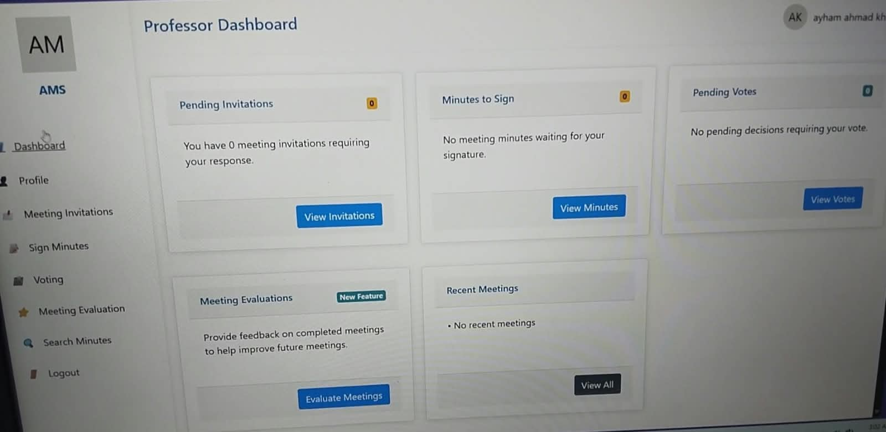
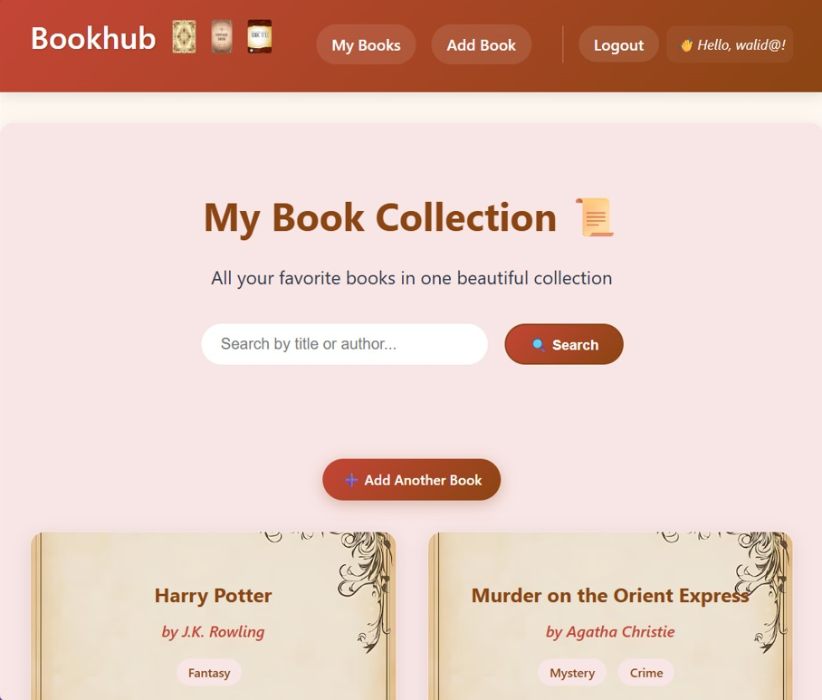

ABOUT ME
I'm a Computer Information Systems graduate with a strong interest in software development and web technologies. I enjoy learning how things work, solving problems, and turning ideas into functional and user-friendly websites.
Currently, I'm expanding my technical skills through the Orange Coding Academy, where I'm gaining hands-on experience in web development, UI/UX, and modern development tools and technologies.
My goal is to build a career in software development, especially in full-stack web development, while continuously learning and improving my skills.
EXPERIENCE
Currently training in software and web development, building practical skills through hands-on learning in front-end and back-end technologies, UI/UX, and software development practices.
Completed a practical software engineering program focused on programming fundamentals, software development practices, problem-solving, teamwork, and using Git and GitHub. Gained hands-on experience with Python as part of the training.
QUALIFICATION
Completed a Bachelor's degree in Computer Information Systems, gaining knowledge in programming, databases, software engineering, web technologies, and information systems.
GPA: 84 — ExcellentCompleted a practical software engineering program focused on programming fundamentals, software development practices, problem-solving, teamwork, and Git and GitHub.
SKILLS
Skills that help me communicate, work with others, solve problems, and approach tasks effectively.
Technologies and development tools I have learned through academic study and hands-on training.
PROJECTS

A smart web-based system designed to simplify meeting scheduling, invitation management, and response tracking. It was initially developed for the Computer Information Systems department and can be further extended to serve other departments across the college.

A Django web application that allows users to create personal accounts and manage their book collections. Users can add books with details such as title, author, genre, and description, then view, edit, or delete them.
REFERENCES